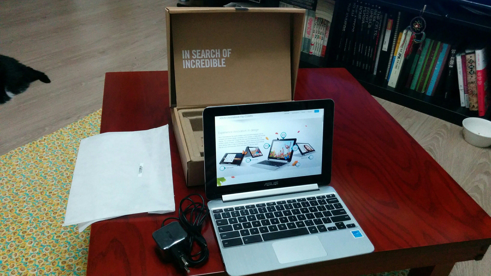

C100PA Chrombook DS03 Flip ASUS Chromebook Flip C100PA DS03 장점 리눅스 싸다 안드로이드 앱 구동 긴 구동시간 크롬브라우저의 사용성을 극대화 시켜주는 키보드  단점 ARM Cortex-A17 의 한계 Crouton + Linux 조합으로 x86 프로그램 구동 불가능. Docker 설치 불가 최신 Raspberry Pi에서는 사용가능 한듯